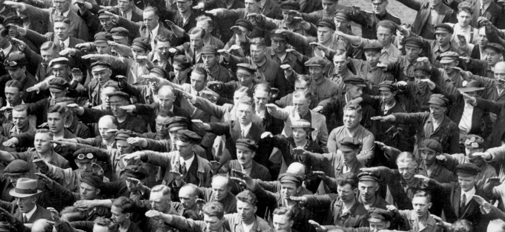
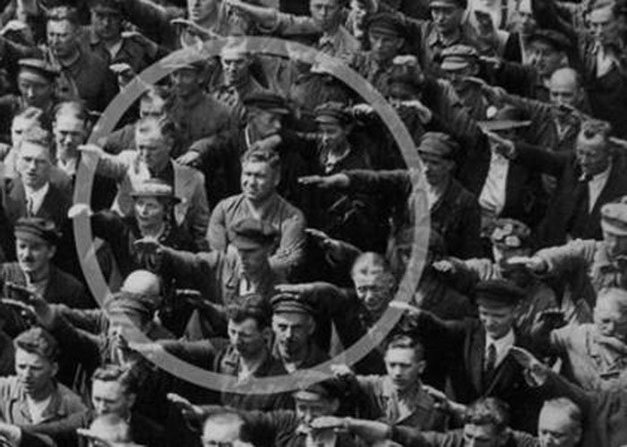

Pas 8. Totalitarisme postmodern?
Té sentit, avui, recordar i continuar la reflexió sobre les monstruositats dels totalitarismes?
Pensar el totalitarisme per pensar millor el present. Pensar el totalitarisme és, probablement, l'única manera d'impedir que es reprodueixi. Entendre'l per ser capaços de detectar-lo quan reapareix amb rostres nous i formes renovades.
El món del totalitarisme és un món on les idees, les normes i els objectius no són opcions personals sinó que han estat establertes a priori per algú que s'ha autoadjudicat la tasca de pensar per tu. Ho expressava Simone Weil (1909 - 1943), una de les veus filosòfiques més lúcides del segle XX: “Els règims totalitaris no aniquilen el pensament lliure, sinó que és l'absència de pensament lliure que afavoreix el totalitarisme”.
Existeix un antídot: pensar i fer-se preguntes, tal com fan els filòsofs. Són activitats que haurien de ser més presents a la nostra vida quotidiana, connectant amb els orígens de la filosofia, tal com explica la filòsofa catalana Marina Garcés:
“Jo sempre recordo que la filosofia va néixer al carrer perquè hi havia gent diversa que podia trobar-se i interpel·lar-se. Però la filosofia no és qualsevol manera de pensar: és partir de l’actitud que la relació amb el coneixement és de desig i no de possessió i que aquest desig es pot compartir i sotmetre a discussió. Demana exigència i rigor, estar disposats a pensar les coses fins al final, fins on ja no sabem què més dir, fins a treure conseqüències noves, inventar conceptes que ens serveixen per relacionar-nos amb el que passa, amb el que no sabem com pensar, amb el que ens fa mal o por.”
En la mesura que renuncies a pensar per tu mateix, que sigui un altre el que pensi per tu, t’estàs convertint en més vulnerable a la dominació intel·lectual i, al capdavall, en víctima -i còmplice- del totalitarisme.
Pensa, doncs, i fes-te preguntes sobre pràctiques i actituds totalitàries actuals com el racisme, la xenofòbia, la censura, la deshumanització de l’adversari, el control de la informació, els centres d’internament… Són totes elles una versió postmoderna de la versió clàssica del totalitarisme llunyà, superat i irrepetible? En són un símptoma?
Et plantegem ara un cas ben rellevant de la nostra actualitat democràtica:
Ciutadans de primera i ciutadans de segona
Llegeix aquest fragment de “Els refugiats d’avui em recorden al meu pare fugint del nazisme”, escrit pel filòsof francès Guy Sorman (París, 1944) la família del qual va ser exterminada:
“A vegades cal comparar coses que no són comparables. Entre el 1933 i el 1940, molts milions de refugiats que s’escapaven d’Alemanya, Polònia i els països bàltics fugint del nazisme van xocar amb fronteres tancades. Es deien Nathan, Samuel o Rachel […]. Passem ara a un tema que no té cap relació amb el que hem descrit: la fugida de milions de refugiats de Síria, de l'Iraq i d’Eritrea. ¿És que els Latifa, Ali i Ahmed no són massacrats amb la mateixa eficàcia industrial que ho van ser els Samuel, Nathan i Rachel? ¿Hem de creure que els Latifa, Ali i Ahmed corren el risc d’ofegar-se al Mediterrani, de morir asfixiats en un camió, de morir-se de set en la seva travessa grega perquè són turistes o perquè estan banalment buscant feina a Anglaterra? No, ells també fugen de l’extermini: accepten el risc de morir ofegats perquè saben que l’alternativa és ser gasificats, metrallats, bombardejats, morts de gana. No és l'Holocaust. ¿O potser és que encara no ho és? ¿Com en direm d’aquí uns anys d'aquesta marea humana que està envaint Europa? ¿Com justificarem als nostres llibres d'història i en les lamentacions oficials aquest èxode que els europeus, els seus pobles i els seus governants intenten reduir a una “crisi” tècnica que exigiria només alguns ajustos legals a l’estatut del refugiat? Si el Nathan visqués, no tinc cap dubte que veuria en l’Ali o l’Ahmed el seu propi rostre”
Ja el 1932, Aldous Huxley en el pròleg de la seva novel·la distòpica Un món feliç descrivia el que, al seu parer, podria ser el futur del totalitarisme:
“Un Estat totalitari realment eficaç seria aquell en el qual els caps polítics executius omnipotents i el seu exèrcit de col·laboradors controlessin una població d’esclaus sobre els quals no calgués exercir cap coacció, perquè estimessin la seva servitud.”
És exactament contra aquesta inquietant previsió que hem dissenyat aquest curs...
Atura’t i reflexiona
Mira't aquest fragment de la pel·lícula Cabaret:
Cabaret. Director: Bob Fosse. ABC Pictures - Allied Artis, 1972.
Ara mira't la següent fotografia, presa el 12 de juny de 1936, quan Adolf Hitler va visitar les drassanes de Blohm und Voss. Pots veure com tots els treballadors el reben amb el braç en alt, la salutació nacionalsocialista:
L'ampliem una mica, per fixar-nos en un detall:
És l'August Landmesser, un treballador de les drassanes que, en un acte increïble de rebel·lia -i de temeritat- es va negar a saludar el Führer.
Ara fes una breu reflexió sobre el cas d'aquest home extraordinari (en pots cercar informació a la xarxa) i compara'l amb la idea que transmet el vídeo del fragment de la pel·lícula Cabaret.
Sembla clar que la manera com actuen, tant les persones del vídeo com les que envolten a August Landmesser, és una manera de reaccionar típicament humana.
La qüestió és si la manera com ell reacciona és també essencialment nostra o no...